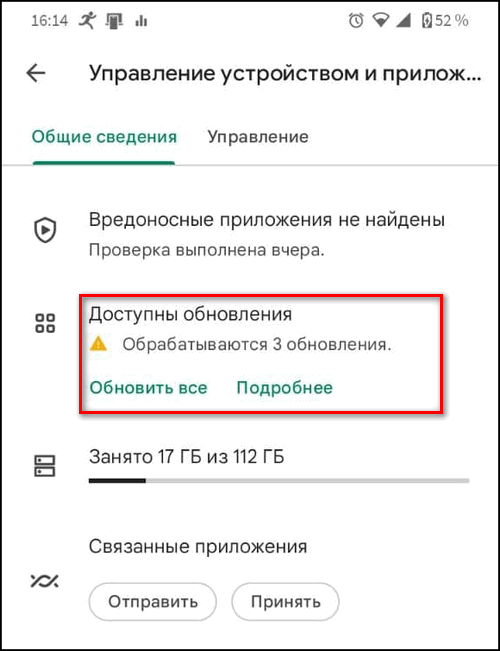
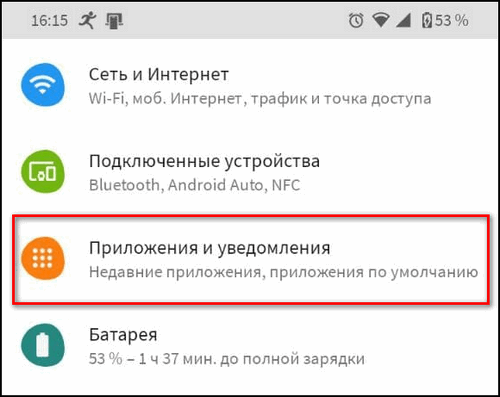
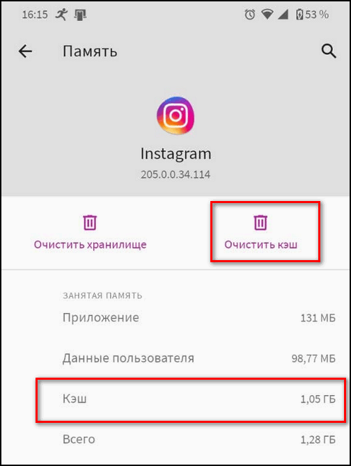

Как вернуть перемотку видео в Инстаграме

Если в Инстаграме* пропала перемотка видео, значит у вас приложение обновилось до последней версии или возникает сбой при работе. Такая ошибка может быть связана с недостатком внутренней памяти или ошибками плеера на телефоне. Примечательно: функция перемотки пропала на данный момент только на телефонах Android, на iPhone и компьютере работает и на последних версиях, будем следить за развитием ситуации.
В последнем обновлении Instagram* убрал возможность перемотки видео и объединил все в один формат, то есть IGTV и обычный пост с видео теперь - одно и тоже. Можно просматривать прямо в ленте, а можно нажав по ролику смотреть в отдельном окне.
Первый вариант, чтобы вернуть перемотку, необходимо откатить версию Instagram* на предыдущую, как это сделать и в каких версиях работала функция будет описано ниже в статье. Второй вариант скачать Инстандер — это полноценный мод для Инстаграма*, который повторяет официальную версию. Его отличие в том, что доступен редактор качества снимков, открыт Reels и включена автоматическая перемотка.
Почему пропала перемотка видео в Инстаграме*
Другая причина, почему в Инстаграме* пропала перемотка видео – некорректная работа встроенного видеоплеера. К примеру, он устарел и пользователь его не обновлял или же установлен новый. Несмотря на наличие встроенных в Инстаграме* инструментов, стандартные утилиты смартфона влияют на работу социальной сети. Другие причины, почему это происходит:
- заполнен кэш. Нужно удалить временные данные, которые мешают загрузке видеофайлов;
- установка проблемного видеоплеера;
- нужно обновить или откатить на рабочую версию перемотки в Инстаграм*. В старых версиях перемотка отсутствовала и в самой последней тоже;
- переустановить Инстаграм*. Возник сбой в работе социальной сети.
Перемотка работает во всех форматах видео, кроме Reels. Этот вариант представлен в виде коротких роликов, продолжительностью не более 15 секунд. Пролистать видео можно в Ленте или IGTV.
Впервые перемотка была добавлена для IGTV, который поддерживает загрузку роликов до 60 минут.
Как вернуть перемотку видео
Один из вариантов, как восстановить перемотку и решить проблему – воспользоваться APK-версией (ссылка будет ниже). На смартфон могут не устанавливаться новые версии, поэтому пользователю необходимо самостоятельно искать новый формат. Или, второй метод – посмотреть автоматические обновления в Play Market или AppStore:
- Зайти в магазин контента – выбрать: «Мои приложения».

- Список на автоматическое обновление – запустить и подождать, пока будет установлена новая версия.
Если после обновления функция до сих пор не работает, тогда скачать версию с нашего сайта, в которой точно присутствует перемотка.
Если на телефоне заполнена память:
- Зайти в «Настройки» смартфона.

- Выбрать: «Приложения» - найти в списке Инстаграм*.
- Удалить кэш и данные – подтвердить.

Теперь пользователь сможет загружать контент, использовать IGTV и перемотку. Но если функция не появилась и листать видео снова не удается – нужно переустановить Instagram* на версию в APK.
Версии в которых работала перемотка
Причина, почему может отсутствовать перемотка в Инстаграме* – устаревшая или последняя версия приложения. При этом, она может не обновляться на новую, если устройство не поддерживает новые форматы операционной системы или попросту устарело. Как установить:
- Скачать APK-файл по ссылке – перенести на смартфон.
- Выбрать вариант: «Разрешить установку из неизвестных источников».
- Подтвердить и подождать, пока приложение будет установлено на устройство.
Помимо этого, нужно удалить предыдущую установленную версию Инстаграма*. Если она была установлена из Play Market – между разными форматами может возникнуть конфликт.
После установки нужно перейти к социальной сети и проверить работу видео. Также, владельцу учетной записи придется заново авторизоваться, поэтому перед удавлением официальной версии нужно запомнить пароль и логин для входа.
Единый формат для просмотра видео
Для просмотра видео используют два раздела: Лента и IGTV. Чтобы делиться видеозаписями, нужно соблюдать технические требования: формат видео, размер и продолжительность. Параметры для загрузки клипов:
- формат: MP4 или MOV. Поддерживается: M4V;
- максимальный объем для загрузки: 3 Гб;
- продолжительность: до одной минуты или 15 минут в IGTV.
Длительность клипа различается в IGTV по количеству подписчиков и наличию верификации. Для владелец страниц, которые подтверждены, доступна загрузка до 60 минут. Ошибка просмотра и перемотки заключается в установленных плагинах для видеоформатов. Если у пользователя пропала возможность пролистывания, то нужно удалить дополнительно установленные приложения для просмотра клипов.